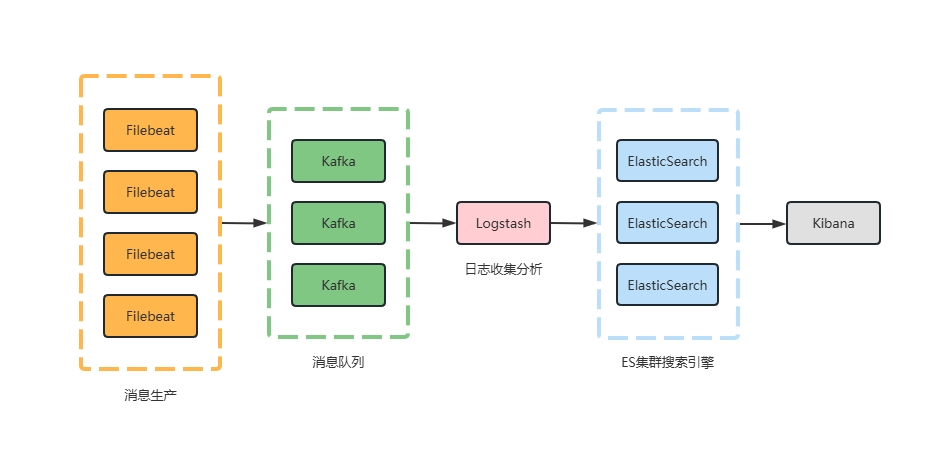

架构图

1 多节点部署ELK
1.1 ES
以三节点为例
mkdir /data/elk/elasticsearch/{config,data,plugins}
chmod -R 777 config data plugins
# vim /data/elk/config/elasticsearch.yml
# es-node1配置文件如下
cluster.name: material-es
node.name: es-node1
node.roles: [ master, data ]
xpack.security.enabled: false
network.host: 0.0.0.0
network.publish_host: 172.16.0.31
http.port: 9200
discovery.seed_hosts: ["172.16.0.31:9300", "172.16.0.32:9300", "172.16.0.33:9300"]
cluster.initial_master_nodes: ["es-node1","es-node2","es-node3"]
http.cors.enabled: true
http.cors.allow-origin: "*"
# es-node2配置文件如下
cluster.name: material-es
node.name: es-node2
node.roles: [ master, data ]
xpack.security.enabled: false
network.host: 0.0.0.0
network.publish_host: 172.16.0.32
http.port: 9200
discovery.seed_hosts: ["172.16.0.31:9300", "172.16.0.32:9300", "172.16.0.33:9300"]
cluster.initial_master_nodes: ["es-node1","es-node2","es-node3"]
http.cors.enabled: true
http.cors.allow-origin: "*"
# es-node3配置文件如下
cluster.name: material-es
node.name: es-node3
node.roles: [ master, data ]
xpack.security.enabled: false
network.host: 0.0.0.0
network.publish_host: 172.16.0.33
http.port: 9200
discovery.seed_hosts: ["172.16.0.31:9300", "172.16.0.32:9300", "172.16.0.33:9300"]
cluster.initial_master_nodes: ["es-node1","es-node2","es-node3"]
http.cors.enabled: true
http.cors.allow-origin: "*"启动容器 docker-compose.yml
services:
elasticsearch:
image: elasticsearch:8.2.0
restart: always
ports:
- "9200:9200"
- "9300:9300"
environment:
ES_JAVA_OPTS: "-Xms5000m -Xmx5000m"
volumes:
- /data/elk/elasticsearch/config/elasticsearch.yml:/usr/share/elasticsearch/config/elasticsearch.yml
- /data/elk/elasticsearch/certs:/usr/share/elasticsearch/certs
- /disk01/elk/elasticsearch/data:/usr/share/elasticsearch/data
- /disk01/elk/elasticsearch/plugins:/usr/share/elasticsearch/plugins1.2 Kafka
docker-compose.yml
services:
zookeeper:
image: quay.io/strimzi/kafka:0.45.0-kafka-3.9.0
command: [
"sh", "-c",
"bin/zookeeper-server-start.sh config/zookeeper.properties"
]
ports:
- "2181:2181"
environment:
LOG_DIR: /tmp/logs
kafka:
image: quay.io/strimzi/kafka:0.45.0-kafka-3.9.0
command: [
"sh", "-c",
"bin/kafka-server-start.sh config/server.properties --override listeners=$${KAFKA_LISTENERS} --override advertised.listeners=$${KAFKA_ADVERTISED_LISTENERS} --override zookeeper.connect=$${KAFKA_ZOOKEEPER_CONNECT}"
]
depends_on:
- zookeeper
ports:
- "9092:9092"
environment:
LOG_DIR: "/tmp/logs"
KAFKA_ADVERTISED_LISTENERS: PLAINTEXT://localhost:9092
KAFKA_LISTENERS: PLAINTEXT://0.0.0.0:9092
KAFKA_ZOOKEEPER_CONNECT: zookeeper:21811.3 Logstash
logstash.conf
input {
kafka {
topics_pattern => ".*"
auto_offset_reset => "earliest"
bootstrap_servers => ["kafka:9092"]
group_id => "logstash"
decorate_events => true
codec => "json"
}
}
filter {
mutate {
remove_field => ["[event][original]"]
}
}
output {
elasticsearch {
hosts => ["172.16.0.31:9200", "172.16.0.32:9200", "172.16.0.33:9200"]
index => "%{[@metadata][kafka][topic]}-%{+YYYY.MM.dd}"
}
}docker-compose.yml
services:
logstash:
image: logstash:8.4.2
hostname: logstash
container_name: logstash
volumes:
#- /elk/logstash/config/logstash.yml:/usr/share/logstash/config/logstash.yml:ro,Z
- /data/elk/logstash/conf.d:/usr/share/logstash/pipeline:ro,Z
ports:
- "5044:5044"
- "50000:50000/tcp"
- "50000:50000/udp"
- "9600:9600"
environment:
- LS_JAVA_OPTS=-Xms2048m -Xmx2048m
- LOGSTASH_INTERNAL_PASSWORD=xxxxxx
- TZ=Asia/Shanghai
restart: always
networks:
- elk1.4 Filebeat
若有需要可单独部署
docker-compose.yml
version: '3'
services:
filebeat:
image: filebeat:8.4.2
user: root
hostname: "${HOSTNAME}"
command: filebeat -e -strict.perms=false
volumes:
- ./filebeat.docker.yml:/usr/share/filebeat/filebeat.yml:ro
- /var/lib/docker/containers:/var/lib/docker/containers:ro
- /var/run/docker.sock:/var/run/docker.sock:ro
- ./system.yml:/usr/share/filebeat/modules.d/system.yml:ro
- /var/log:/var/log:ro
restart: alwaysfilebeat.docker.yml
filebeat.config:
modules:
path: ${path.config}/modules.d/*.yml
reload.enabled: true
filebeat.autodiscover:
providers:
- type: docker
hints.enabled: true
processors:
- drop_event:
when:
contains:
container.image.name: "filebeat:8.4.2"
- add_fields:
fields:
log_source: "server"
setup.kibana:
host: "172.16.0.31:5601"
# ================================== Outputs ===================================
output.kafka:
hosts: ["172.16.0.31:9092", "172.16.0.32:9092", "172.16.0.33:9092"]
topic: '%{[fields.topic]}' # 根据topic自动创建对应的index
topics:
- topic: "system"
when.contains:
event.module: "system"
partition.round_robin:
reachable_only: false
required_acks: 1
compression: gzip
max_message_bytes: 10000002 单节点部署ES（带密码）
需要账号密码管理的es，版本为 elasticsearch7.x
config/elasticsearch.yml
cluster.name: material-es
node.name: es-node1
xpack.security.enabled: true
xpack.security.transport.ssl.enabled: true
network.host: 0.0.0.0
network.publish_host: 172.16.1.108
http.port: 9200
http.cors.enabled: true
http.cors.allow-origin: "*"
ingest.geoip.downloader.enabled: falseconfig/kibana.yml
i18n.locale: zh-CN
server.host: "0.0.0.0"
server.shutdownTimeout: "5s"
elasticsearch.hosts: [ "http://172.16.1.108:19200" ]
monitoring.ui.container.elasticsearch.enabled: true
elasticsearch.username: "elastic"
elasticsearch.password: "xxxxxxxx"docker-compose.yml
version: '3.7'
services:
elasticsearch:
image: docker.io/elasticsearch:7.17.25
container_name: elasticsearch
environment:
- discovery.type=single-node
- ES_JAVA_OPTS=-Xms5000m -Xmx5000m
ports:
- "9200:9200"
- "9300:9300"
volumes:
- /etc/localtime:/etc/localtime:ro
- /etc/timezone:/etc/timezone:ro
- ./config/elasticsearch.yml:/usr/share/elasticsearch/config/elasticsearch.yml
- ./certs:/usr/share/elasticsearch/certs
- /elk/data:/usr/share/elasticsearch/data
networks:
- es-net
kibana:
image: docker.io/kibana:7.17.25
hostname: kibana
container_name: kibana
volumes:
- ./config/kibana.yml:/usr/share/kibana/config/kibana.yml
ports:
- "15601:5601"
environment:
- TZ=Asia/Shanghai
restart: always
networks:
- es-net
networks:
es-net:
driver: bridge启动容器
docker-compose up -d elasticsearch
# 进入容器创建初始密码
docker exec -it elasticsearch bash
# interactive: 手动指定密码
# auto: 随机生成密码
./bin/elasticsearch-setup-passwords interactive
# 重启容器后生效
docker-compose restart elasticsearch